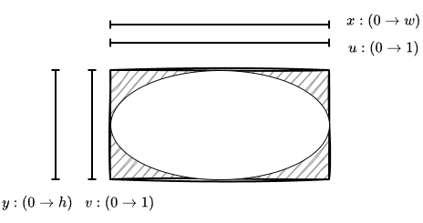
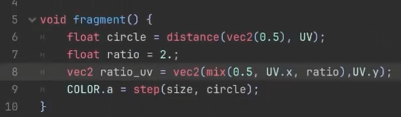

01UV坐标操控
06过渡效果
本章的主题是转场过渡，目标是在整个屏幕上做一个逐渐缩放的可视圆效果。
不过更进一步讲，其实是为了处理如何在非规则图形上形成统一的形状。
在前面章节中大量使用的是UV坐标系，在2Dsprite中，这个坐标系不论原始图形如何，都是默认从左上角到右下角为$(0,0)\to (1,1)$。这在原图是正方形的时候可以直接使用，但如果原图是矩形，中间显然存在着坐标系变化，会使得整个图形并不按照预期运行。
举例来说，使用Sprite2DNode类型，但是通过缩放使其横纵比为$w:h$，非一比一比例。直接使用如下UV坐标来画出一个圆：
void fragment() {
float circle = distance(vec2(0.5),UV);
COLOR.a = step(0.5,circle);
}会发现其实际显示不是圆而是一个椭圆。其原因就来自于开头的那段坐标系变换问题，其可以用下图表示：

这里针对不同情况有多种处理方式。这里要根据所用到的渲染流程以及方式决定用什么方式来。
而本质来说，都是把坐标变换从$(0,0)\to (1,1)$映射回$(0,0)\to (w,h)$。这其中有个问题是，如何知道原始的$w,h$值。
- 给定比例值
最简单的方式就是作为参数输入。例如把$w,h$作为参数传入，然后如下反向修正UV坐标结构就可以得到规整的正圆：
uniform vec2 ratio; // vec2(x,y)
void fragment() {
vec2 ratio_uv = UV*ratio;
float circle = distance(vec2(0.5),UV);
COLOR.a = step(0.5,circle);
}此时整个图像的坐标空间会变成从左上$(0,0)$到右下的$(w,h)$。那么按照距离中心点$(w/2,h/2)$画圆即可。注意这个时候$(0.5,0.5)$这个位置点不再是图的正中心，而是$(0,0)\to (w,h)$这个坐标系中的$(0.5,0.5)$这个位置点上。
而在视频教程中则使用如下的方式来实现这个坐标系变换：

这实际上相当于保持$(0.5,0.5)$仍然为图像中心的语义。
如果希望$(0.5,0.5)$任然保持为图形中心的含义。那么坐标变换的时候可以固定一边的取值范围为$0\to 1$。例如固定$v$值为$0\to 1$，那么$u$的变化范围就要对应变成$0\to w/h$。为了维持$0.5$任然为中心位置，那么需要做如下变换$(u-0.5)*w/h+0.5$。话句话说对于$u$来说相当于做如下变换$u*w/h+(1-w/h)*0.5$。这其实相当于从$0.5$到$u$按比例$w/h$做线性插值。在glsl中这个相当于函数mix(0.5,u,w/h)。
mix函数 https://registry.khronos.org/OpenGL-Refpages/gl4/html/mix.xhtml
mix函数接受三个参数mix(x,y,a)，其输出为$x*(1-a)+y*a$。这个实际上是$x,y$之间的线性插值。可以想象$x,y$分别是两个点。当$a=0$时其在$x$，当$a=1$时其在$y$。中间随着$a$变化经过一个线性移动。从另一个角度来看，对于固定的$a$来说，其相当于一个按比例拉近缩放，对于变化的两个点之间按照比例进行一个缩放控制。
- UV变化导数
设置比例值可以临时解决问题，但是如果用在不同的图上面，比例值不同，其比例也要调整，这样就不是很方便。
所以最好的方式是去获取当前UV值到实际显示像素比例的函数的斜率。即认为UV是实际像素的一个函数$u=\frac{1}{w}x,v=\frac{1}{h}y$。我们需要的数值就是这个函数的斜率，或者说$du/dx=1/w,dv/dy=1/h$。
这个计算过程，在Shader中就是通过dFdx(p),dFdy(p)函数来实现。
https://registry.khronos.org/OpenGL-Refpages/gl4/html/dFdx.xhtml
该函数只能在片段着色器(Fragment Shader)中使用。其返回的是表达式$p$关于屏幕坐标$w,h$的偏导数。其具体实现大致是用当前片元的数值和相邻偏远的数值差来计算。语义上相当于去计算这个函数的偏导数。由上可得：
$$(w,h)=(\frac{1}{dFdx(UV.x)},\frac{1}{dFdy(UV.y)})$$shader可以如下书写
uniform float circle_size;
void fragment() {
vec2 partial_ratio = vec2(1.0/dFdx(UV.x),1.0/dFdy(UV.y));
vec2 ratio_uv = UV * partial_ratio;
float circle = distance(vec2(0.5) * partial_ratio,ratio_uv);
COLOR.a = step(circle_size,circle);
}即可在正中心画出一个圆，不过需要注意此时的坐标范围是$(0,0)\to (w,h)$。所以圆的半径需要大一点才能看到挖出的圆孔。
如果要做转场过渡等全屏效果，这种变化是常用的。因为全屏效果往往屏幕分辨率不一，要统一形成图形要做一定的屏幕适配变换。